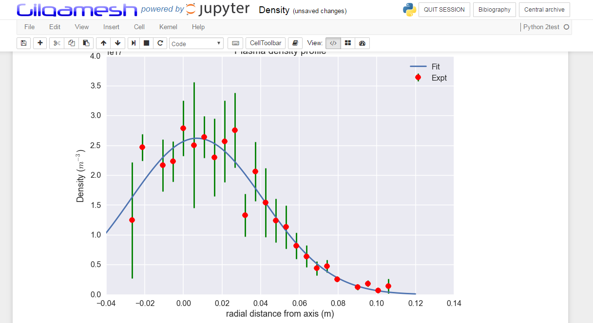
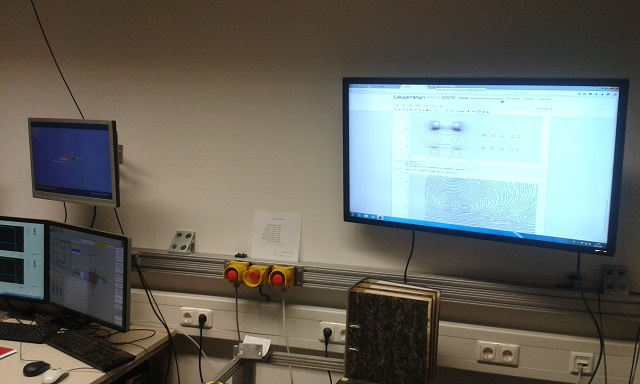

I have explained in the first part the reason why I chose a Jupyter-based system; in few words: maintenance, human/data interface, python. I will now give some details on the design of the application. A prototype can be find in my github but be careful: this is still a proof-of-concept, yet a working one, that I and my teammates are using (and debugging) but still in an early stage without the polished completeness of a production-graded application. Therefore, my purpose is not here to “sell” a product that can be downloaded for immediate use but to explain the method and, maybe, encourage others to develop their own application.
The application, which is officially called Gilgamesh, is made of three components:
Gilgamesh Server
It is a personal version of Jupyter Hub, which basically enables to use Jupyter in the cloud: you connect to a login page with the webbrowser and you can start a personal instance of Jupyter with the dashboard as a front page. I say that this version is personal because I have rewritten the code almost from scratch using only the main mechanism (reversed-proxy/spawner) and leaving aside all what makes Jupyter Hub battle-hardened. The reason was twofold: I needed to use Jupyter Hub with Windows (and the standard version cannot because of the way process IDs are managed by Windows) and, above all, I wanted to understand how it worked. I didn’t recode all the safety systems because I didn’t need them for the proof of concept: if one process idles, I can reboot the Hub: the number of users is limited (ten) and won’t be disturbed too much by few seconds of waiting. Another reason why it is personal is that I have added some services to the Hub. Actually, you can easily add services to Jupyter Hub by using “hooks”, which are kind of access ports for external codes. But when I started, the mechanism was not clear for me and it was easier to add the services directly in the Tornado code. The main service that I have added is a centrale repository where users can push and pull their notebooks from and to their account. This is easily done because I use for storing the notebooks, not the local filesystem but a PostGreSQL database using the PGContents extension from Quantopian. The other service is the bibliography: there is a bibtex file with all useful articles, books and other documents which can be displayed in a HTML page (with the BibtexParser module and the JINJA2 template) and which can be referenced in a notebook with a small javascript extension that I have added and that converts every \citep[xxxx2016] in a hyperlink to the content of the corresponding document (a la Latex).

Gilgamesh
It is the Python Library that provides access to the data and to the physics models. This part is deeply dependent on the structure of the diagnostics that we have, which makes it not easily exportable for other projects in the present configuration. Yet there are several patterns that can easily be generalized. My present work is to separate this general logic from the details of the implementation of our diagnostics. The objective of the library is to give the user a high-level access to the data, without thinking of how the data are hard-wired to the captor and to give him the power of data processing libraries like pandas, sk-learn and friends. One difficulty with the high level access is to provide a seamless interface to data which are permanently changing from experiment to experiment: diagnostics can be changed, recalibrated, disconnected, reconnected, new components can be added to the testbed, and so on. It is painful for the user to keep track of all changes, especially if you are not on location. So, the idea is that the library take cares of all the details: if the user wants the current signal from the Langmuir probe, he just has to type ‘Langmuir_I’ and he will get it: the library would have found for the request experiment on which port it was connected and which calibration was applied to the raw signal. This is one step to the high level approach and it is related to the ‘Signal’ approach: you call a signal by its name and than you plot it, you check its quality, your process it. Another approach, which is complementary, is to make the signals aware of their environment; it is the ‘Machine’ approach. The tesbed and its components, especially the diagnostics are modelled in Python by classes (in a tree-like hierarchy). A given diagnostic has its own class with its name, its properties (position, surface,…), its collection of signals and its methods which represent its internal physics model. Let’s take an example with again a Langmuir probe: instead of calling the signal ‘Langmuir_I’ and the signal ‘Langmuir_V’ and process them to extract the density, you just call the method Langmuir.density() and the object will do all the hard work for you. So the library makes it possible for the user to choose between the ‘signal’ approach for basic processing of data and the ‘machine’ approach to activate the heavy physics machinery to interpret at a higher level these data.
Gilgamesh Manager
This is the more classical part: a standalone, GUI-based application to manage the data. I added it as a safety net: I was not sure at the beginning how easy it would be to use the notebooks to manage the data. So I used Qt-Designer to develop this graphical layer to the Gilgamesh Library. I am not sure that I will keep this component in the future. The development of the ipywidgets is fast and makes it possible to develop some advanced interactive tools directly in the notebook. If you combine that with the Dashboards extension, you practically get the equivalent of a native application in the browser. OK, I exaggerate a bit, because it is not yet as fast and the interactive manipulation of data (like with pyqtgraph that I use in the Manager) is not as efficient but these tools are progressing quickly and I can see a total replacement in the near future. But even now, I have a notebook “Dashboard” that displays the overview of the results of the last discharge on the big screen of the control room and it is, I must say, convincing.

This is it: the tour of the design choices for this Jupyter-based data processing system comes to the end. Next time, I will give some return on experience on the development and operation of it. After that, we will have a look at some examples of each component.